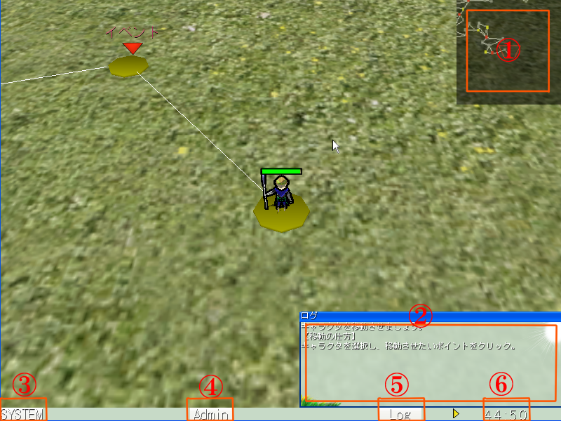

■ゲーム画面

番号
説明
①
ミニマップを表します。ミニマップの詳細は以下の通り。
緑色の点：プレイヤーを表します。
赤色の点：敵を表します。
黄色の点：街や回復地点など特別な施設を表します。
赤い線：この線で囲まれた範囲が画面に表示されます。
②
ログウィンドウです。ゲーム中のイベントの会話や情報などのログが表示されます。
③
システムボタンです。このボタンを押すと、システムメニューが現れます。システムメニューでは、オプションを表示させたり、タイトル画面に戻れます。
⑤
ログボタンです。このボタンを押すと、ログウィンドウの表示のON/OFFを切り替えれます。
⑥
残り時間です。この時間が0になると、ゲームオーバーになります。